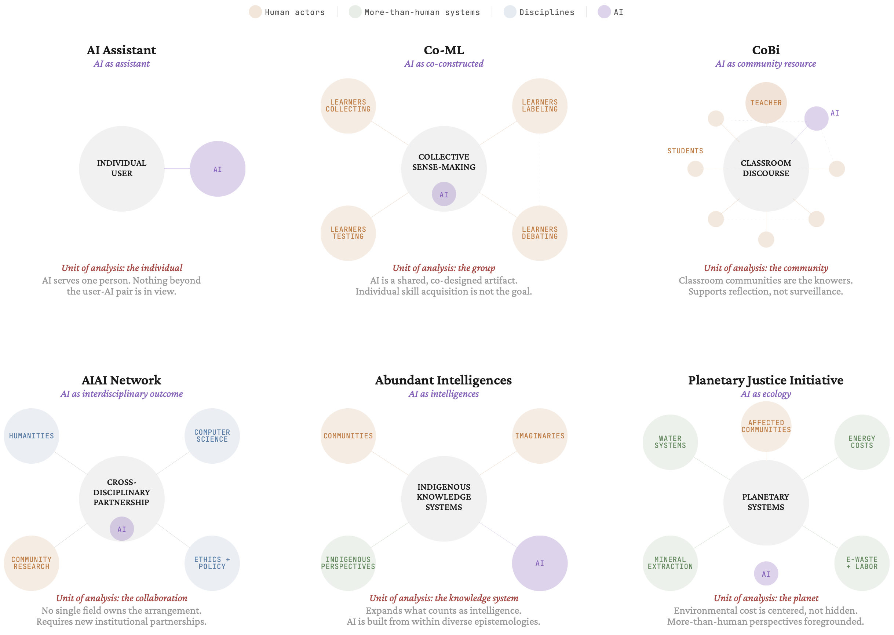

Figure 1. Creating coordinate data to animate gesture with Mondrian Transcription tool. (Left) Screenshot of the video uploaded to the Mondrian Transcription tool used to manually trace movements of the teacher’s right hand as a purple path. (Right) Excerpt of the structured text file format that is produced after tracing movements.
